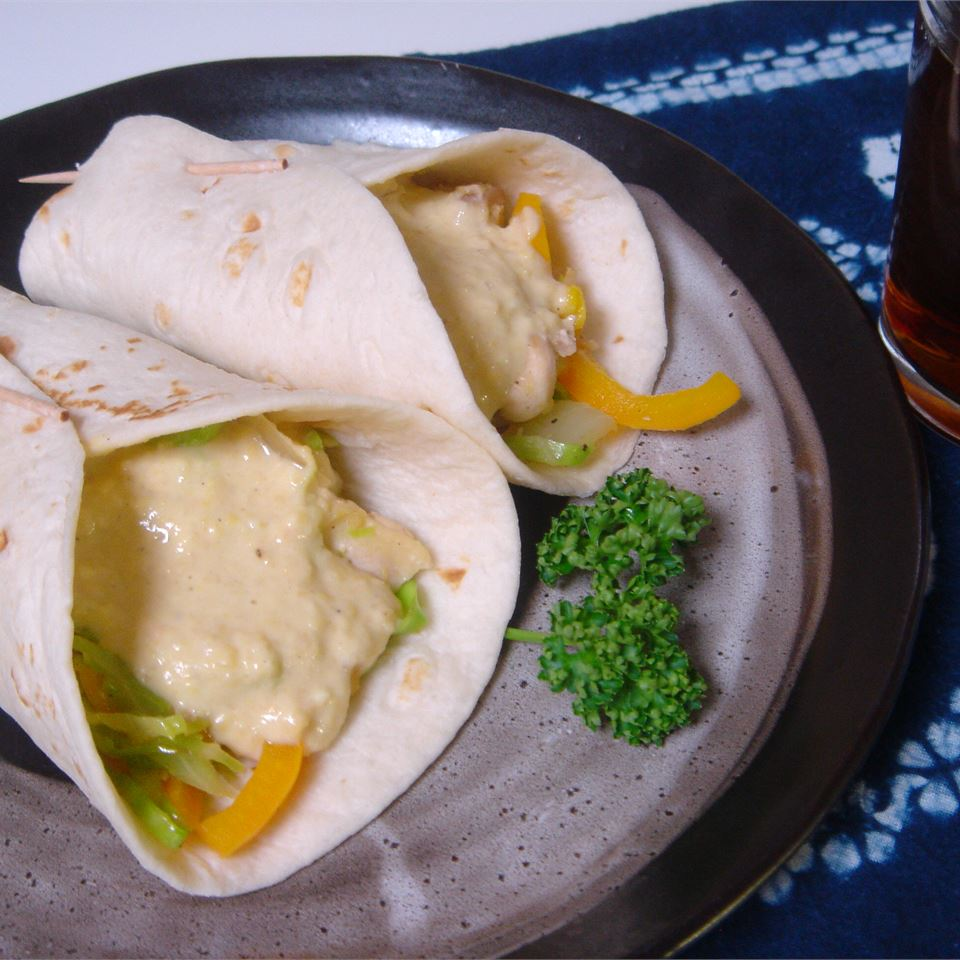

Slaw mmin Wraps

Discription
A nutritious, balanced meal that is a snap to throw together. Works great with leftover chicken!
Ingredients
- 2 tablespoons olive oil
- 1 onion, chopped
- 2 cloves garlic, crushed
- ½ (16 ounce) package broccoli coleslaw mix
- 1 cup shredded cabbage
- ¾ cup cooked chicken breast, cut into bite-sized pieces
- salt and pepper to taste
- 1 (15 ounce) can garbanzo beans, undrained
- 3 tablespoons mayonnaise
- 2 tablespoons Dijon mustard
- 1 teaspoon ground cumin
- 4 cloves garlic, minced
- ½ teaspoon onion powder
- ½ teaspoon lemon pepper
- salt and pepper to taste
- 4 (10 inch) flour tortillas
Steps
-
Heat oil in a large heavy skillet over medium high heat. Saute onion and 2 cloves
crushed garlic until onions are soft and translucent, about 3 minutes. Stir in the
broccoli coleslaw mix, and cook until tender. Add the cabbage and chicken and toss
for a minute or two. Remove from heat and season with salt and pepper to taste.
-
In a blender, combine garbanzo beans, mayonnaise, mustard, cumin, garlic, onion
powder, lemon pepper, salt and pepper. Blend until smooth and creamy.
-
Heat tortillas for a few seconds in the microwave for easier folding. Spread each
tortilla with sauce, then put a large heap of the slaw mixture on top. Wrap like you
would a burrito.